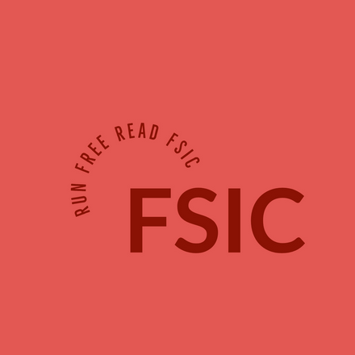

FSIC: Free Software Information Center
FAQ
Here we try to answer some of the most asked frequent questions we get. We decided to create a "FAQ" page to answer them in one place, so we don't have to message all of you individually. If you have any other questions that are not displayed here, feel free to contact us via our email system. Click on the questions to display an answer.
Why did you decide to create this site?
We were always very enthusiastic about operating systems, so one day we decided to share our knowledge with the world. A perfect execution would be through a website where we can share a lot of different types of media - text, images, videos, tutorials, ISOs, reviews, interviews, etc. Another benefit is also an option for you to help us continue with this work via donation.
Do you have any background of working directly with operating systems?
Yes, all of our team members are working or have previously worked on operating system development, mostly GNU/Linux but also MS Windows and UNIX. So we have a lot of experience with the stuff we are talking about. :)
What are the most favorite OS choices of your team members?
Our preferred OSes are mostly Debian GNU/Linux, Fedora GNU/Linux, Ubuntu GNU/Linux, FreeBSD and OpenBSD. We don't use MS Windows even though some of us worked directly on it in the past.
What do you choose your daily operating systems based on?
Nowadays mostly based on the amount of freedom the OS gives us, whether it's freedom as free-software or freedom as how much can you customize your OS.
I would like to replace my Windows OS with free-software/open-source oriented OS. What do you recommend as a starting point?
For new users we always recommend Ubuntu, Debian, or Mint. Make some research and pick one that you like the most, you can definitely change it after some time, if you don't like it anymore.
I like your site and I'd like to contribute somehow. Is there any way to do this?
There are multiple ways you can contribute. You can email us with any mistakes that you found or any improvements that you think would be apprioriate. If you want collaboration, contacts us and we can make a deal. If you want and can afford it, you can also support us by navigating to the Contribute part of our site and donate any value that you want, or buy some of our products that are displayed there.
Are there any inspirations for what you are doing?
We are heavily inspired by three people, and that is Richard M. Stallman, Linus Torvalds, and Terry A. Davis.
Are there any specific plans you have with your website in the future?
We definitely plan to add some backend, JS, PHP, and put a lot of work into our contribute "shop".